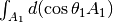
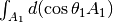
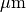

Introduction¶
Overview¶
Electro-optical system design, data analysis and modelling involve a significant amount of calculation and processing. Many of these calculations are of a repetitive and general nature, suitable for including in a generic toolkit. The availability of such a toolkit facilitates and increases productivity during subsequent tool development: ‘develop once and use many times’. The concept of an extendible toolkit lends itself naturally to the open-source philosophy, where the toolkit user-base develops the capability cooperatively, for mutual benefit. This paper covers the underlying philosophy to the toolkit development, brief descriptions and examples of the various tools and an overview of the electro-optical toolkit.
The pyradi toolbox can be applied towards many different applications. An example is included in the pyradi website (see the file exflamesensor.py). This example was first published in a SPIE conference paper [SPIE8543Pyradi].
Toolkit approach¶
The development of this toolkit is following the Unix philosophy for software development, summarised in the words of Doug McIlroy: ‘Write programs that do one thing and do it well. Write programs to work together.’ In broader terms the philosophy was stated by Eric Raymond, but only selected items shown here (http://en.wikipedia.org/wiki/Unix_philosophy):
- Rule of Modularity: Write simple parts connected by clean interfaces.
- Rule of Clarity: Clarity is better than cleverness.
- Rule of Composition: Design programs to be connected to other programs.
- Rule of Simplicity: Design for simplicity; add complexity only where you must.
- Rule of Parsimony: Write a big program only when it is clear by demonstration that nothing else will do.
- Rule of Transparency: Design for visibility to make inspection and debugging easier.
- Rule of Robustness: Robustness is the child of transparency and simplicity.
- Rule of Representation: Fold knowledge into data so program logic can be stupid and robust.
- Rule of Economy: Programmer time is expensive; conserve it in preference to machine time.
- Rule of Generation: Avoid hand-hacking; write programs to write programs when you can.
- Rule of Optimisation: Prototype before polishing. Get it working before you optimise it.
- Rule of Extensibility: Design for the future, because it will be here sooner than you think.
Example application¶
A typical radiometry toolkit requirement (very much simplified) is the calculation of the detector current of an electro-optical sensor viewing a target object. The system can be conceptually modelled as shown in the figure below, comprising a radiating source with spectral radiance, an intervening medium (e.g. the atmosphere), a spectral filter, optics, a detector and an amplifier.
{kind=link}
The amplifier output signal
can be calculated in the following equation, by integrating over
all wavelengths, over the full source area and over the optical
aperture area  ,
,
where
 is the output signal voltage,
is the distance between elemental areas
is the output signal voltage,
is the distance between elemental areas
 and
,
is the source spectral emissivity,
is the Planck Law radiation at temperature
and
,
is the source spectral emissivity,
is the Planck Law radiation at temperature
 at location ,
is the atmospheric spectral transmittance,
is the sensor spectral transmittance at location ,
is the spectral detector responsivity in [A/W],
is the amplifier transimpedance gain in [V/A].
The spectral integral accounts for the total
flux for all wavelengths, the spatial integral
at location ,
is the atmospheric spectral transmittance,
is the sensor spectral transmittance at location ,
is the spectral detector responsivity in [A/W],
is the amplifier transimpedance gain in [V/A].
The spectral integral accounts for the total
flux for all wavelengths, the spatial integral
 accounts for flux over the total area of the source, and
the spatial integral
 accounts for the total area of the receiving area.
accounts for flux over the total area of the source, and
the spatial integral
 accounts for the total area of the receiving area.
The top graphic in the following figure illustrates the reasoning behind the spectral integral as a product, followed by an integral (summation),
{kind=link}
where the spectral variability of the source, medium and sensor parameters are multiplied as spectral variables and afterwards integrated over all wavelengths to yield the total in-band signal. The domain of spectral quantities can be stated in terms of a wavelength, wavenumber, or less often, temporal frequency.
Likewise, the source radiance is integrated over the two respective areas of the
target , and the sensor aperture . Note that if the
sensor field of view footprint at the source is smaller than the physical
source area, only the flux emanating from the footprint area is integrated.
This example is a relatively complete worked example. The objective is to calculate the signal of a simple sensor, detecting the presence or absence of a flame in the sensor field of view. The sensor is pointed to an area just outside a furnace smokestack, against a clear sky background. The sensor must detect a change in signal, to indicate the presence or absence of a flame.
The sensor has an aperture area of  and a field of view of sr. The sensor filter spectral
transmittance is shown below. The InSb detector has a peak responsivity of 2.5
A/W and normalised spectral response shown below. The preamplifier transimpedance
is 10000 V/A.
and a field of view of sr. The sensor filter spectral
transmittance is shown below. The InSb detector has a peak responsivity of 2.5
A/W and normalised spectral response shown below. The preamplifier transimpedance
is 10000 V/A.
The flame area is 1 , the flame temperature is
C, and the emissivity is shown below. The emissivity
is 0.1 over most of the spectral band, due to carbon particles in the flame.
At 4.3  there is a strong emissivity rise due to the hot
carbon dioxide in the flame.
The distance between the flame and the sensor is 1000~m. The atmospheric properties are calculated with the Modtran Tropical climatic model. The path is oriented such that the sensor stares out to space, at a zenith angle of . The spectral transmittance and path radiance along this path is shown in below.
The peak in the flame emissivity and the dip in atmospheric transmittance are both centered around the band. The calculation of flux radiative transfer through the atmosphere must account for the strong spectral variation, by using a spectral integral.
The signal caused by the flame is given by the equation above, where the integrals over the surfaces of the flame and sensor are just their respective areas. The signal caused by the atmospheric path radiance is given by
where is the sensor field of view, is the optical aperture area, is the spectral path radiance and the rest of the symbols are as defined above.
{kind=link}
The pyradi code to model this sensor is available as exflamesensor.py. The output from this script is as follows:
Optics : area=0.0078 m^2 FOV=0.0001 [sr]
Amplifier: gain=10000.0 [V/A]
Detector : peak responsivity=2.5 [A/W]
Flame : temperature=1273.16 [K] area=1 [m^2] distance=1000 [m] fill=0.01 [-]
Flame : irradiance= 3.29e-04 [W/m^2] signal= 0.0641 [V]
Path : irradiance= 5.45e-05 [W/m^2] signal= 0.0106 [V]
It is clear that the flame signal is six times larger than the path radiance signal, even though the flame fills only 0.01 of the sensor field of view.
| [SPIE8543Pyradi] | Pyradi: an open-source toolkit for infrared calculation and data processing, SPIE Proceedings Vol 8543, Security+Defence 2011, Technologies for Optical Countermeasures, Edinburgh, 24-27 September, C.J. Willers, M. S. Willers, R.A.T. Santos, P.J. van der Merwe, J.J. Calitz, A de Waal and A.E. Mudau. |